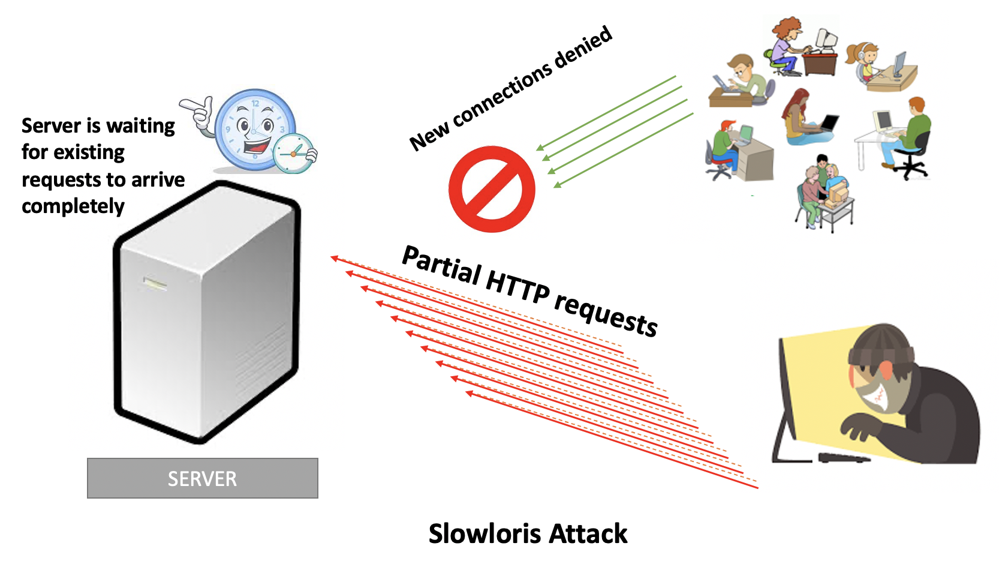
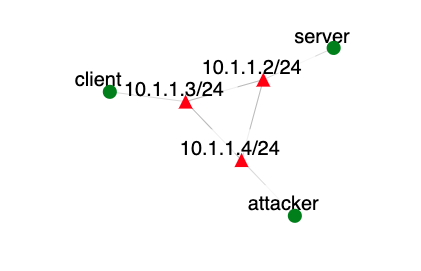

Detecting and Handling a Slowloris Attack
Created by: Jelena Mirkovic, USC-ISI (mirkovic at isi.edu)
Overview
This exercise will demonstrate how to use online AI tools to analyze traffic generated by a low-rate DDoS attack, called Slowloris, and diagnose the problems. It will then teach students how to use online AI tools to devise a defense.
Required Reading
Introduction
A Slowloris attack is an application-layer attack, which operates by utilizing partial HTTP requests. The attack functions by opening connections to a targeted Web server and then keeping those connections open as long as it can.

Slowloris keeps connections open by continuously sending partial Web requests. Since the request is never completed the server cannot process it and close the connection. Affected servers will keep these connections open, filling their maximum concurrent connection pool, eventually denying additional connection attempts from legitimate clients.
Attack Tool
You can find the Slowloris attack tool on the attacker node in /tmp/attacker/slowloris folder. The tool was cloned from https://github.com/gkbrk/slowloris.
Assignment Instructions
Setup
- If you don't have an account, follow the instructions here.
- Create an instance of this exercise by following the instructions here, using slowlorisforensics as Lab name. Your topology will look like below:

.
- After setting up the lab, access your nodes.
Tasks
1. Traffic Collection
After installation, the legitimate traffic will flow from the client node to the server, and attack will periodically be launched from the attacker node. Interact with an online AI tool (e.g., ChatGPT, Claude, Gemini) to learn how to start traffic collection on the server node using tcpdump. If you run into problems, interact with the tool again to see if it can help you resolve the problems. Your goal is to collect packet headers of all traffic coming on the 10.1.1.2 interface into a dumpfile in your home directory. Run the collection for 5 minutes and then stop it. Submit your tcpdump command for this task.
2. Traffic Analysis
Think how you may detect a Slowloris connection in traffic. What are its defining features? Then ask an online AI tool (e.g., ChatGPT, Claude, Gemini) to give you Python code that extracts these features per connection. The code should display the client IP and port of each connection, its start time and these defining features. Run the code on your collected dumpfile. Do you see attack connections? Describe what features let you distinguish these from legitimate connections. Submit your prompts to the AI tool, the tool you used, the resulting code, and the output it produced. In the output, highlight those connections that you believe are attack (e.g., in different font color). These should be mostly coming from 10.1.1.4 - the attacker node, but you cannot use IP address in detection.
3. Attack Protection
Now that you have detected attack connections how would you implement protection from Slowloris attack. Think which features distinguish legitimate from attack connections. Your goal is to set up system tools that normalize all connections to fit the legitimate connection profile. Note: you should not just block the entire attack IP, because it may also be sending legitimate traffic mixed in with the attack. Instead you should find a way to set up your server so that the attack is no longer effective. You can use the
iptables and
conntrack tools, already installed on the server node, for this task. You can also install new tools. You can use online AI tools to suggest solutions for this task. Once you implement the attack protection repeat traffic collection and traffic analysis steps. Did the protection work? If not, repeat your attempt to implement an effective protection from this attack. Iterate until you get it right. Submit the commands you used in each iteration and note if they were successful or not. Submit the final output of your traffic analysis code.
Submission Instructions
Submit a doument with the following items (label each section):
- Tcpdump command from task 1.
- AI prompts, generated code, analysis code output with attack connections highlighted from task 2.
- List of features that your analysis code uses to detect attack connections. Specify the range of values for the select features in legitimate connections vs attack connections.
- AI prompts, defense implementation commands, analysis code output from task 3. With the defense deployed, specify the range of values for the select features in legitimate connections vs attack connections (as visible in the analysis output)